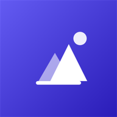
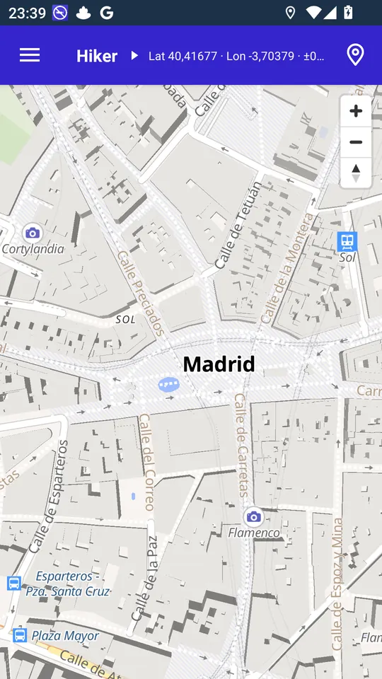
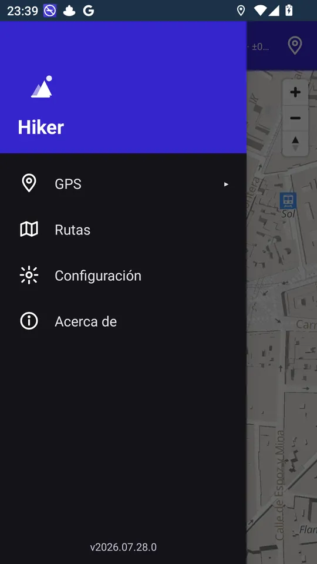
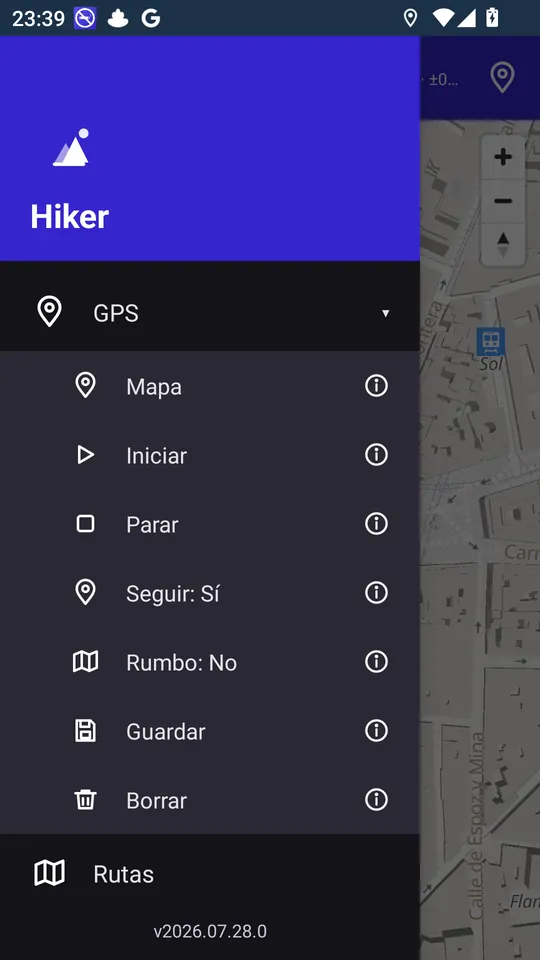

Soporte · Hiker
Cómo funciona Hiker, pantalla a pantalla, y qué hace cada opción.
En esta guía



Quita a Hiker las restricciones de batería y de segundo plano (Ajustes de Android › Aplicaciones › Hiker › Batería › Sin restricciones; en Xiaomi, también «Inicio automático»). Deja activado el permiso de notificaciones: la notificación «Grabando la ruta» es lo que permite a Android seguir dando posiciones con la pantalla apagada.
No: cada punto se guarda en el móvil al momento. Al volver a abrir Hiker verás «Grabación interrumpida» y podrás pulsar Recuperar.
Comprueba que la ubicación del móvil está activada y que Hiker tiene permiso de ubicación precisa. Espera unos segundos al aire libre y pulsa el botón de ubicación. En bosques densos, cañones o entre edificios altos la señal GPS es peor.
El ajuste a los caminos necesita conexión. Sin ella, la ruta se guarda igualmente tal como se grabó.
Antes de guardar puedes pulsar el botón de alternar para ver la ruta grabada en rojo y guardar esa en lugar de la ajustada.
Sí, si están en formato GPX: en Rutas pulsa Cargar GPX y elige el fichero. Para crear o editar rutas en el ordenador puedes usar herramientas web gratuitas como GPX Studio y luego pasar el fichero al móvil.
Es el modo Rumbo. Desactívalo en el menú lateral › GPS › Rumbo: No.
Algunos ficheros GPX importados no incluyen la altitud de cada punto; sin ella no se pueden calcular los desniveles ni el perfil.
Abre una incidencia en GitHub contando qué te pasa y con qué versión y dispositivo.